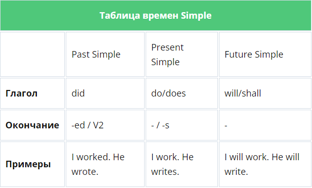
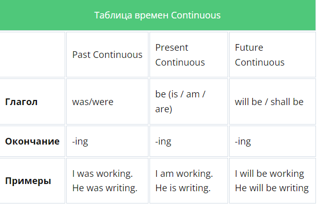

Просто об английских временах
- Стоит понимать, что в английском существует 3 кита, на которых держится вся грамматика — «to be», «to have» и «to do».
- Каждый из этих китов может плавать в трех временах: Present, Past и Future (настоящее прошедшее и будущее).
- В свою очередь, Present, Past и Future впадают в моря Simple, Continuous, Perfect и Perfect Continuous.
- А пока киты (или китихи) плавают в этих морях, у них появляются детки, а точнее, образуются новые формы. Так и получается двенадцать времен. Три кита (времена) умножаем на четыре моря (формы времен) — получаем двенадцать.
С таким подходом запомнить все проще. Ведь думать, что в английском языке двенадцать мифических времен вместо наших привычных трех — ошибочно. Есть только три времени, а все остальное — формы их выражения и уточнения.
Не запутались? Давайте разберем более детально.
Как выучить все времена на английском
Нужно просто разложить все по полочкам и систематизировать свое обучение, пока это не дойдет у вас до автоматизма. Вы будете знать, сколько изучили, и сколько еще предстоит, тогда изучение времен не будет казаться чем-то безграничным и бесконечным.
Разложим три основных глагола по трем временам.

- Present Simple используют для выражения обычного, регулярно повторяющегося действия.
- Past Simple используют для выражения действия, произошедшего в прошлом.
- Future Simple используют для выражения действия, которое произойдет в будущем.

- Present Perfect Continuous ииспользуют для выражения действия, начавшегося в прошлом и продолжающегося в настоящее время, либо важна продолжительность действия.
- Past Perfect Continuous ииспользуют для выражения действия, начавшегося в определенный момент в прошлом и продолжавшегося какое-то время до начала другого действия.
- Future Perfect Continuous используют для выражения действия, которое, начавшись в определенный момент, все еще будет продолжаться в какой-то момент времени в будущем.
Как не бояться времен в английском языке?
Вот несколько советов. Вы привыкли к спискам из трех-пяти пунктов, но все советы тут не уместить. Над временами придется хорошенько поработать, поэтому и правил по их изучению немало.
- Будьте готовы к тому, что вы должны хорошо прочувствовать разницу между временами с точки зрения логики. Времена в английском и русском языках не аналогичны на 100%, поэтому провести параллель получится не всегда.
- После знакомства с каждым новым временем, с ним стоит хорошо попрактиковаться, выполняя различные грамматические упражнения для того, чтобы запомнить конструкцию и, конечно же, ситуацию, в рамках которой мы это время применяем.
- Для прошедшего времени важно выучить неправильные глаголы. Для этого существуют специальные песни, которые состоят из всех этого вида глаголов. Попробуйте. Это очень эффективный метод изучения неправильных глаголов. И не только для меломанов но особенно для них.
- Изучайте времена английского языка систематично, не пытаясь выучить все за один день. Как только начнете ориентироваться в одном времени, можете приступать к следующему. Затем обязательно попрактикуйте упражнения–миксы, где будут собраны задания. Это нужн для того, чтобы проверить, не путаетесь ли вы в этих временах.
- Двенадцать времен не существуют отдельно друг от друга. Можно, конечно, попробовать растянуть их на двенадцать месяцев. Вроде бы логично. Но это целостная система, и нужно научиться понимать времена, а не просто их зазубрить. Только так можно овладеть ими на нужном уровне.
- Желательно, практиковаться в английском каждый день по 15 минут. В таком случае нове знания отложатся у вас в памяти надолго, вы будете пользоваться ими на автомате.
- Если изучаете английские времена самостоятельно, поищите в интернете полезные видео. На нашем сайте вы найдете множество полезных грамматических видео–уроков. Это намного интересней и верней, чем искать правила где–либо в интернете.
- Не перетрудитесь! Важно давать себе отдыхать. Если вы превратите английский в ежедневную каторгу, это на пользу не пойдет, а лишь отобьет желание его учить.
- При изучении времен в английском языке, обратите внимание, какая у вас память — визуальная или слуховая. Исходя из этого, можно понимать, каким заданиям лучше отдавать предпочтение, чтобы был наиболее эффективный результат.
- Не беритесь изучать все времена английского языка сразу. Для начала изучите 5-6 основных времен. Этого будет вполне достаточно, чтобы общаться на английском грамотно
В итоге, важно уметь использовать эти времена в ходе разговора. Это достаточно сложно сделать самостоятельно. Предположим, найти правила, упражнения и ответы к ним можно самостоятельно, но понять, так ли вы употребляете времена английского языка в речи — задача совсем не из простых.
Сколько нужно времени, чтобы выучить времена
Итак. вы — в начале пути, мы вас запугали объемом работы, и в голове всплывает вопрос. Сколько нужно времени, чтобы освоить все времена?
Конечно, зависит от ваших способностей к языкам, методике обучения и времени, которое вы готовы уделять этому вопросу. Владение временами группы Simple — это навык уровня Elementary. То есть трем базовым временам можно обучиться приблизительно за три месяца по мере изучения языка с нуля.
Уверенное владение остальными временами, включая самые сложные, это уже навык Intermediate. К примеру, Past Perfect Continous или Future Perfect вам не понадобятся на первых порах, и без них можно обойтись. А вот к концу первого-второго года интенсивного обучения уже можно освоить.
Заключение
С временами в английском языке обычно существует 3 варианта развития событий:
- Cтудент решает, что времена в английском ему не нужны, потому что он хочет всего лишь подтянуть разговорную речь
- Студент находит популярный учебник по грамматике и потихоньку изучает каждое время самостоятельно.
- Студент обращается к педагогу и доверяется ему на своем пути к владению временами в полном объеме.